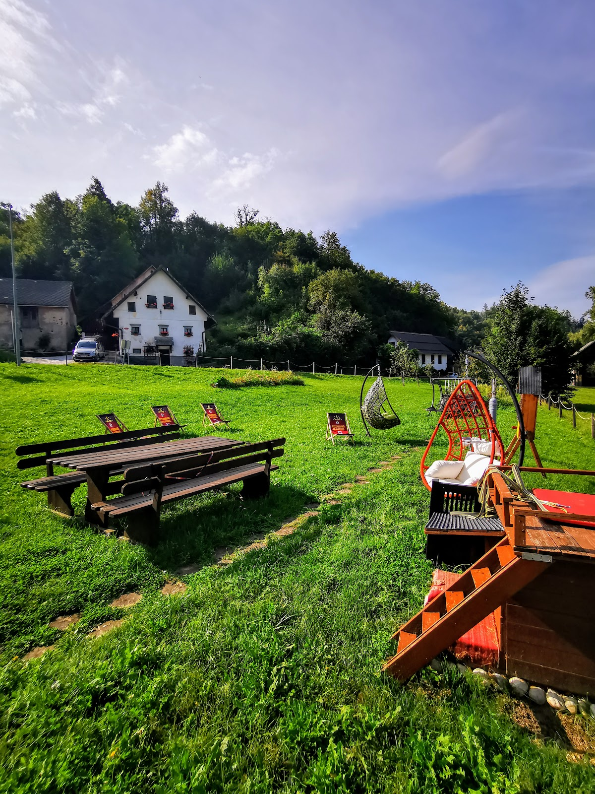
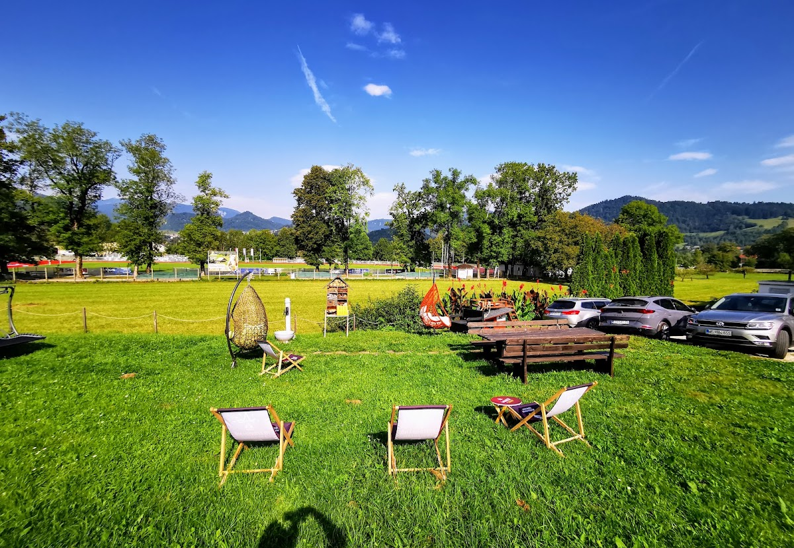
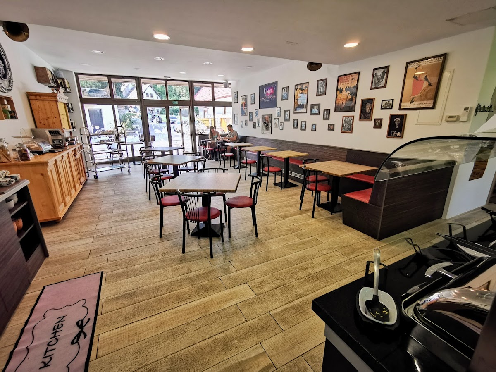
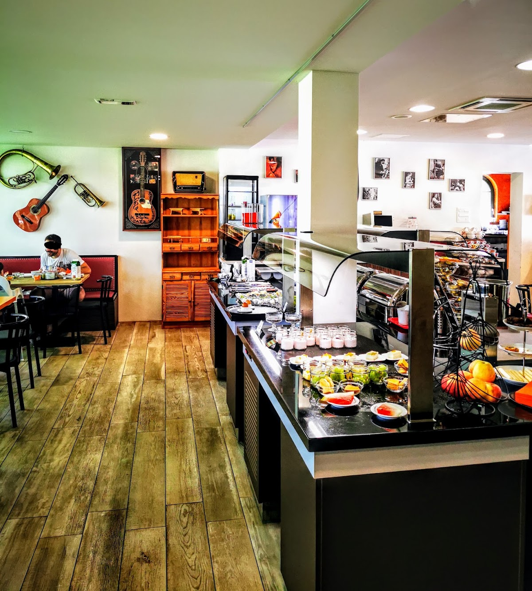
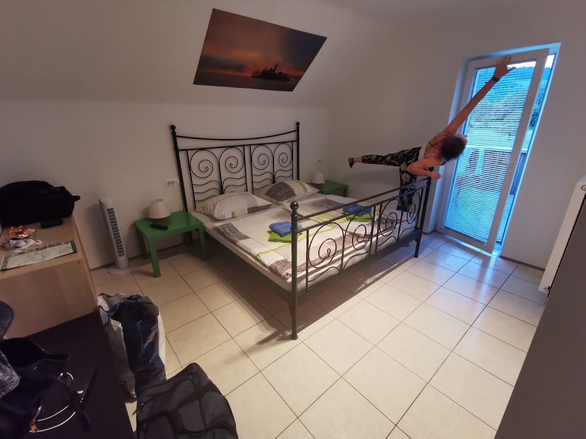
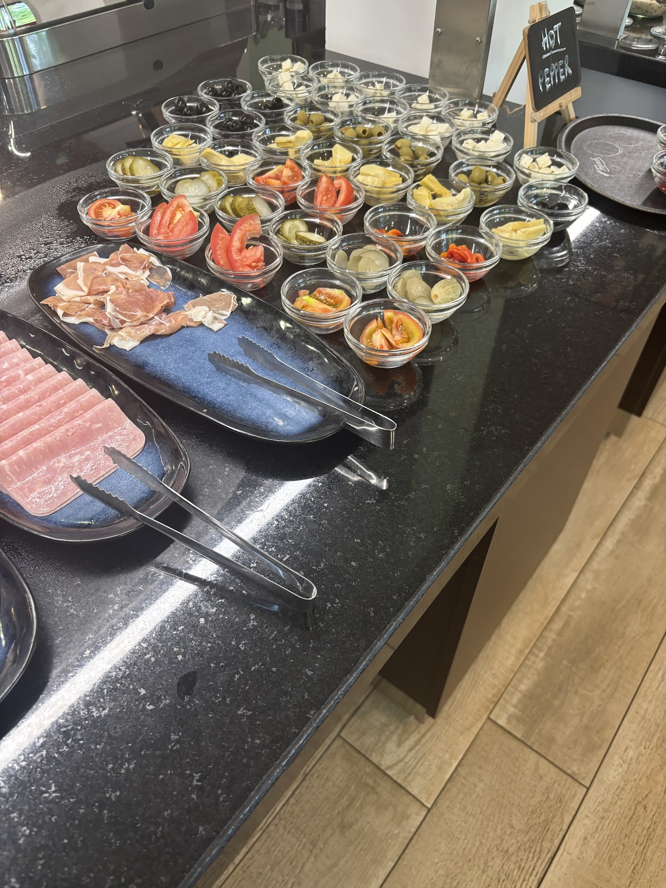
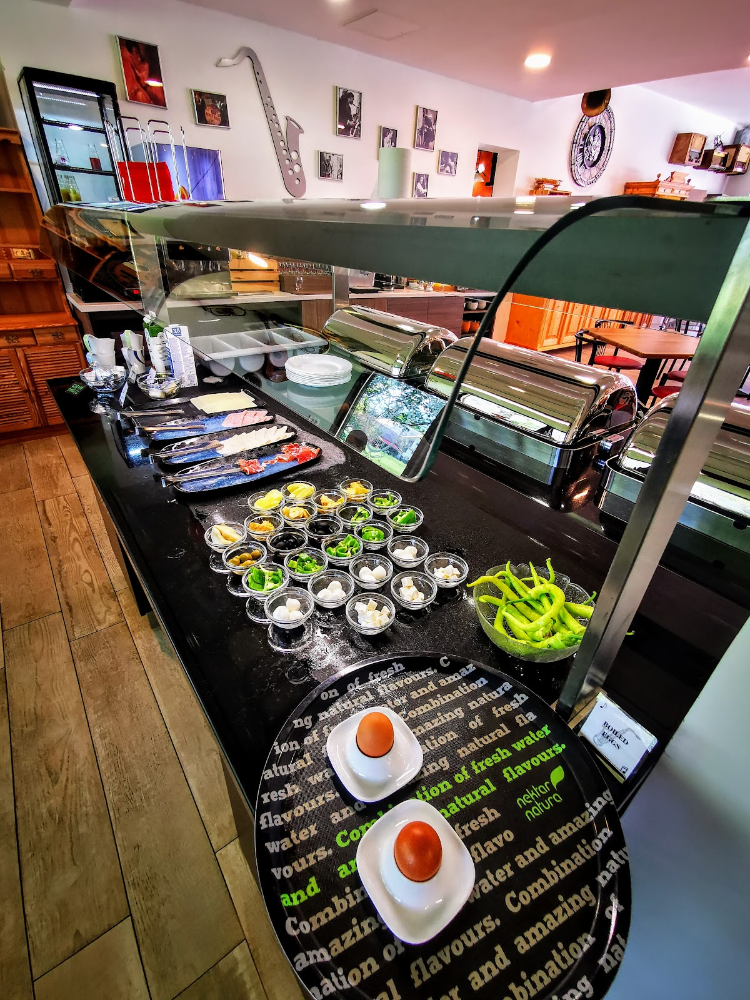
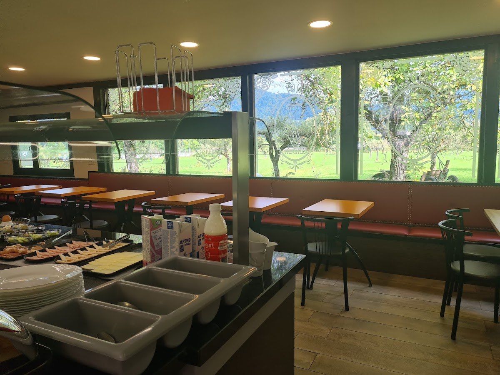
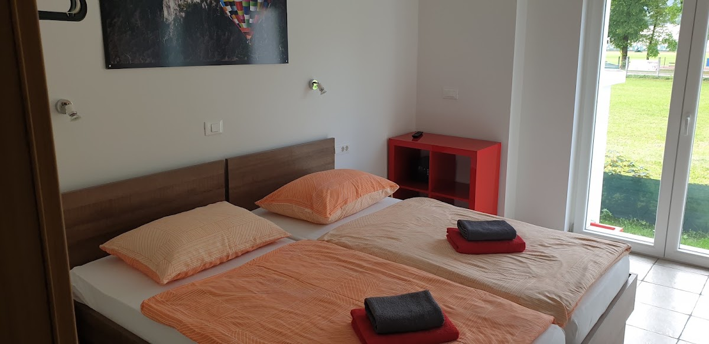

Sobe in izkušnja bivanja
Sobe so čiste, udobne in primerne za različne potrebe. Gostitelji poskrbijo za preprost prihod, tudi ob poznejših urah. Na voljo so dodatne brisače in osnovne storitve, bivanje pa je sproščeno in brez zapletov.

Prijazna gostitelja
Jani in njegova žena sta znana po dostopnosti ter pripravljenosti pomagati z informacijami in nasveti.

Pester zajtrk
Vsako jutro je na voljo bogat izbor jedi, ki ga gostje pogosto posebej izpostavijo kot prednost.

Shramba prtljage
Gostje lahko varno shranijo svojo prtljago, kar je še posebej priročno za pohodnike v okolici.
O Rooms Jani
Rooms Jani na Prešernovi cesti 68 v Bledu vodita Jani in njegova žena. Gostje pogosto pohvalijo prijaznost gostiteljev, čistočo sob in pester zajtrk. Možna je tudi varna hramba prtljage, kar je priročno za pohodnike. Sobe so primerne za krajši ali daljši oddih, komunikacija z gostitelji pa je jasna in preprosta.




Rezervirajte svoj termin
Za več informacij ali rezervacijo pokličite ali pišite. Prijazna gostitelja vam bosta z veseljem odgovorila.

Lokacija v središču Bleda
Rooms Jani se nahaja v bližini avtobusnih postaj in le kratek sprehod od blejskega jezera. Okolica ponuja možnosti za pohodništvo ter hiter dostop do vseh glavnih točk Bleda.